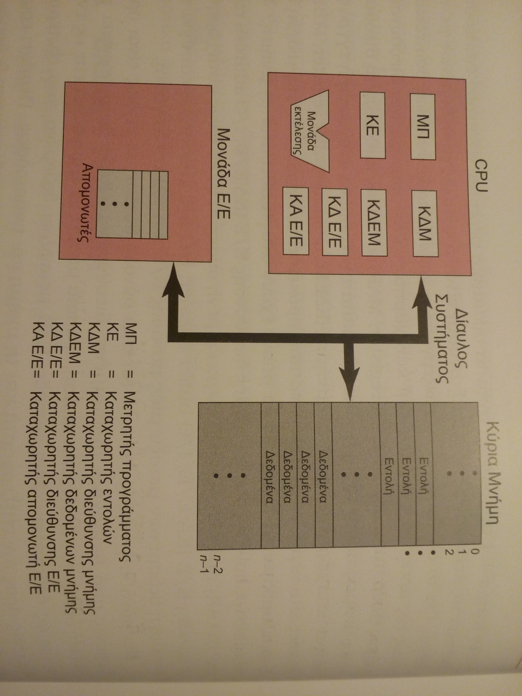

1.1 ΒΑΣΙΚΑ ΣΤΟΙΧΕΙΑ (ΣΕΛ 8)
Από την γενική άποψη, ένας υπολογιστής αποτελείται από διάφορους τύπους συσκευών όπως επεξεργαστής, μνήμη και Ε/Ε συσκευές, με μια ή περισσότερες ενότητες για κάθε τύπο. Αυτοί οι πόροι είναι διασυνδεδεμένοι με τέτοιο τρόπο ώστε να επιτυγχάνουν την κύρια λειτουργία του υπολογιστή, η οποία είναι να εκτελεί προγράμματα. Κατά συνέπεια, υπάρχουν τέσσερα κύρια δομικά στοιχεία:
- Επεξεργαστής : Ελέγχει την λειτουργία του υπολογιστή και εκτελεί τις λειτουργίες επεξεργασίας των δεδομένων του. Όταν υπάρχει μόνο ένας επεξεργαστής, συχνά αναφέρεται ως Κεντρική Μονάδα Επεξεργασίας.
- Κύρια Μνήμη : Αποθηκεύει δεδομένα και προγράμματα. Στη συνήθη περίπτωση αυτή η μνήμη είναι προσωρινή. Επίσης, αναφέρεται ως πραγματική μνήμη ή πρωτεύουσα μνήμη.
- Μέρη Ε/Ε : Μετακινούν τα δεδομένα μεταξύ του υπολογιστή και του περιβάλλοντος. Το εξωτερικό περιβάλλον αποτελείται από ένα εύρος εξωτερικών συσκευών, που συμπεριλαμβάνουν συσκευές δευτερεύουσας μνήμης, εξοπλισμό επικοινωνιών και τερματικά.
- Διαύλος συστήματος (system bus) : Συγκεκριμένη δομή η οποία περιλαμβάνει και τους μηχανισμούς που παρέχουν επικοινωνία μεταξύ των επεξεργαστών, της κύριας μνήμης και των μερών Ε/Ε.
Μια από τις λειτουργίες του επεξεργαστή είναι να ανταλλάσσει δεδομένα με την μνήμη. Για το σκοπό αυτό, συνήθως ο επεξεργαστής κάνει χρήση δυο εσωτερικών καταχωρητών:
- Καταχωρητής Διεύθυνσης Μνήμης (MAR) : καθορίζει την διεύθυνση στη μνήμη για την επόμενη ανάγνωση ή εγγραφή.
- Καταχωρητής ενδιάμεσης Μνήμης (MBR) : Περίεχει τα δεδομένα τα οποία θα γραφτούν στη μνήμη ή ανακαλεί τα δεδομένα που διαβιβάστηκαν από τη μνήμη.
- Ε/Ε Καταχωρητής Διεύθυνσης (I/O AR) : καθορίζει μια συγκεκριμένη συσκευή I/O.
- Ε/Ε Καταχωρητής Ενδιάμεσου Χώρου (I/O BR) : χρησιμοποιείται για την ανταλλαγή των δεδομένων μεταξύ μιας συσκευής Ε/Ε και του επεξεργαστή.
'Ενα στοιχείο μνήμης αποτελείται από ένα σύνολο περιοχών, καθορισμένες από διαδοχικά αριθμημένες διευθύνσεις. Κάθε περιοχή περιέχει ένα δυαδικό αριθμό ο οποίος μπορεί να μεταφραστεί είτε σε εντολή είτε σε δεδομένα. Ένα στοιχείο Ε/Ε μεταφέρει δεδομένα από τις εξωτερικές συσκευές προς τον επεξεργαστή και τη μνήμη και αντιστρόφως. Περιέχει εσωτερικούς ενδιάμεσους χώρους για προσωρινή διατήρηση των δεδομένων, μέχρις ότου αυτά να μπορούν να αποσταλούν.
1.2 ΚΑΤΑΧΩΡΗΤΕΣ ΕΠΕΞΕΡΓΑΣΤΗ
1.3 ΕΚΤΕΛΕΣΗ ΕΝΤΟΛΗΣ (ΣΕΛ 11)
Για να είναι εκτελέσιμο ένα πρόγραμμα από τον επεξεργαστή, περιλαμβάνεται ένα σύνολο εντολών, το οποίο αποθηκεύεται στην μνήμη. Στην πιο απλή της μορφή, η επεξεργασία εντολής αποτελείται από δυο βήματα: ο επεξεργαστής διαβάζει μια-μια τις εντολές από τη μνήμη και εκτελεί κάθε εντολή. Η εκτέλεση του προγράμματος αποτελείται από επαναλήψεις της διαδικασίας του παραλαβής και εκτέλεσης εντολής. Η εκτέλεση της εντολής μπορεί να συμπεριλαμβάνει αρκετές λειτουργίες και εξαρτάται από τη φύση της εντολής.
Η επεξεργασία που απαιτείται για μια μοναδική εντολή ονομάζεται κύκλος εντολής. Τα βήματα εκτέλεσης της εντολής αναφέρονται ως κύκλος ανακλησης και κύκλος εκτέλεσης. Η εκτέλεση του προγράμματος σταματά μόνο εάν κλείσει η μηχανή, εάν προκύψει κάποιο είδος σφάλματος ή έχει προκύψει εντολή του προγράμματος η οποία σταματά τον υπολογιστή.
ΑΝΑΚΛΗΣΗ ΚΑΙ ΕΚΤΕΛΕΣΗ ΕΝΤΟΛΗΣ
Στο ξεκίνημα κάθε κύκλου εντολής, ο επεξεργαστής ανακαλεί μια εντολή από τη μνήμη. Σε κάθε τυπικό επεξεργαστή, ο μετρητής προγράμματος κρατά τη διεύθυνση της εντολής για να μπορεί στη συνέχεια να ανακληθει. Εκτός εάν ακολουθεί διαφορετικές οδηγίες, ο επεξεργαστής πάντοτε αυξάνει το PC μετά την ανακληση κάθε εντολής έτσι ώστε να μπορεί να ανακαλέσει στη συνέχεια την αμέσως επόμενη εντολή.
Η εντολή που ανακλήθηκε φορτώνεται σε έναν καταχωρητή του επεξεργαστή γνωστό ως Καταχωρητής εντολών (Register). Η εντολή περιέχει δυαδικά ψηφία που καθορίζουν την ενέργεια που πρέπει να εκτελέσει ο επεξεργαστής. Ο επεξεργαστής μεταφράζει την εντολή και εκτελεί την απαιτούμενη ενέργεια. Γενικά, αυτές οι ενέργειες εντάσσονται στις εξής τέσσερις κατηγορίες:
- Επεξεργαστής - Μνήμη : Τα δεδομένα μπορεί να μεταφέρονται από τον επεξεργαστή στη μνήμη ή από τη μνήμη στον επεξεργαστή
- Επεξεργαστής - Ε/Ε : Τα δεδομένα μπορεί να μεταφέρονται από ή προς περιφερειακή συσκευή, με μεταφορά μεταξύ του επεξεργαστή και μιας μονάδας Ε/Ε
- Επεξεργασία δεδομένων : Ο επεξεργαστής μπορεί να εκτελεί κάποια αριθμητική ή λογική λειτουργία στα δεδομένα.
- Έλεγχος : Μια εντολή μπορεί να καθορίσει την αλλαγή σε μια ακολουθία εκτέλεσης.
Μια εκτέλεση εντολής μπορεί να περιλαμβάνει ένα συνδυασμό αυτών των ενεργειών.
Ο επεξεργαστής περιέχει ένα απλό καταχωρητή δεδομένων που ονομάζεται συσσωρευτής.
λειτουργια ε/ε
Ένα μέρος Ε/Ε μπορεί να ανταλλάσει δεδομένα άμεσα με τον επεξεργαστή. Ακριβώς, όπως ο επεξεργαστής μπορεί να ξεκινά μια ανάγνωση ή εγγραφή από τη μνήμη, με τον καθορισμό της διευθυνσης της συγκεκριμένης θέσης, ο επεξεργαστής μπορεί να διαβάσει ή να εγγράψει δεδομένα από και προς ένα μέρος Ε/Ε. Σε αυτή την τελευταία περιπτωση ο επεξεργαστής αναγνωρίζει μια συγκεκριμένη συσκευή η οποία ελέγχεται από ένα συγκεκριμένο κομμάτι Ε/Ε. Έτσι, μια ακολουθία εντολών μπορεί να προκύψει με εντολές Ε/Ε αντί με εντολές αναφερόμενες στη μνήμη.
Σε κάποιες περιπτώσεις, είναι επιθυμητό να επιτρέπονται απευθείας ανταλλαγές Ε/Ε και μνήμης για να απαλλαγεί ο επεξεργαστής από την εργασία Ε/Ε. Σε μία τέτοια περίπτωση ο επεξεργαστής παραχωρεί σε ένα μέρος Ε/Ε την αρμοδιότητα να διαβάζει ή να γράφει από και προς τη μνήμη, έτσι ώστε η μεταφορά Ε/Ε - μνήμης να μπορεί να προκύπτει χωρίς την εμπλοκή του επεξεργαστή. Κατά τη διάρκεια μιας τέτοιας μεταφοράς, το μέρος Ε/Ε γνωστοποιεί τις εντολές ανάγνωσης ή εγγραφής προς τη μνήμη, ελευθερώνοντας τον επεξεργαστή από την ευθύνη για την ανταλλαγή. Αυτή η λειτουργία είναι γνωστή ως Άμεση Προσβαση στη Μνήμη (DMA).
1.4 διακοπες (σελ 15)
Όλοι οι υπολογιστές παρέχουν ένα μηχανισμό σύμφωνα με τον οποίο άλλα συστατικά μέρη (Ε/Ε, μνήμη) μπορούν να διακόψουν την κανονική λειτουργία του επεξεργαστή.
Οι διακοπές παρέχονται αρχικά ως ένας τρόπος για την βελτίωση της αποτελεσματικότητας της επεξεργασίας.
Το πρόγραμμα Ε/Ε αποτελείται από τρεις ενότητες :
- Μια ακολουθία από εντολές, για να προετοιμάσουν την λειτουργία Ε/Ε. Αυτό μπορεί να περιλαμβάνει την αντιγραφή των δεδομένων εξόδου σε μια ειδική ενδιάμεση μνήμη και την προετοιμασία των παραμέτρων για μια εντολή συσκευής.
- Η συγκεκριμένη εντολή Ε/Ε. Χωρίς τη χρησιμοποίηση διακοπών, κάθε φορά που αυτή η εντολή χρησιμοποιείται, το πρόγραμμα πρέπει να περιμένει τη συσκευή Ε/Ε για να εκτελέσει την απαιτούμενη λειτουργία. Το πρόγραμμα μπορεί να περιμένει εκτελώντας επαναληπτικά έναν έλεγχο λειτουργίας για να καθορισθεί εάν η λειτουργία Ε/Ε έχει ολοκληρωθεί.
- Μία ακολουθία απο εντολές, για να ολοκληρωθεί η λειτουργία. Αυτό μπορεί να συμπεριλάβει τη ρύθμιση μιας σημαίας, η οποία να καθορίζει την επιτυχία ή την αποτυχία της λειτουργίας.
Με δεδομένο ότι η ολοκλήρωση μιας λειτουργίας Ε/Ε μπορεί να διαρκέσει για σχετικά μακρύ χρονικό διάστημα, το πρόγραμμα Ε/Ε αναμένει περιμένοντας για την ολοκλήρωση της λειτουργίας, επομένως το πρόγραμμα χρήστη είναι σταματημένο στο σημείο της κλήσης για κάποια αξιοσημείωτη χρονική περίοδο.
διακοπες και ο κυκλος εντολης
Με τις διακοπές, ο επεξεργαστής μπορεί να απασχοληθεί με την εκτέλεση άλλων εντολών κατά τη διάρκεια μιας λειτουργίας Ε/Ε. Το πρόγραμμα χρήστη φτάνει σε ένα σημείο στο οποίο κάνει μια κλήση συστήματος με τη μορφή μιας κλήσης. Το πρόγραμμα Ε/Ε το οποίο καλείται σε αυτή την περίπτωση αποτελείται μόνο από τον κώδικα προετοιμασίας και την συγκεκριμένη εντολή Ε/Ε. Μετά από την εκτέλεση αυτών των λίγων εντολών, ο έλεγχος επιστρέφει στο πρόγραμμα χρήστη. Στο ενδιάμεσο διάστημα, εξωτερική συσκευή ειναι απασχολημένη με το να δέχεται δεδομένα από τη μνήμη του υπολογιστή και να τα τυπώνει. Αυτή η λειτουργία Ε/Ε επιτελείται ταυτόχρονα με την εκτέλεση των εντολών του προγραμματος χρήστη.
Όταν η εξωτερική συσκευή γίνει έτοιμη για να εξυπηρετηθεί δηλαδή όταν είναι έτοιμη να δεχθεί περισσότερα δεδομένα από τον επεξεργαστή, το κομμάτι Ε/Ε για την εξωτερική συσκευή αποτελείται απο σήμα αίτησης διακοπής προς τον επεξεργαστή. Ο επεξεργαστής απαντά με προσωρινή παύση της εκτέλεσης του τρέχοντος προγράμματος και στρέφεται προς το πρόγραμμα εξυπηρέτησης (διαχειριστής διακοπής) της συγκεκριμένης συσκευής Ε/Ε και επαναφέρει την κανονική εκτέλεση, το προγραμμα μετά την ολοκληρωση της εξυπηρέτησης της συσκευής.
Απο την άποψη του προγράμματος χρήστη, μια διακοπή είναι απλώς μια διακοπή της κανονικής ακολουθίας εκτέλεσης. Οταν η επεξεργασια της διακοπής ολοκληρωθεί, επαναφέρεται η εκτέλεση. Επομένως, το πρόγραμμα χρήστη δεν πρέπει να περιέχει κάποιο ειδικό κώδικα για να διαχειρίζεται τις διακοπές. Ο επεξεργαστής και το Λ.Σ. είναι υπεύθυνα για την προσωρινή παύση του προγράμματος χρήστη και την επαναφορά του στο ίδιο σημείο.
Για την υποστήριξη των διακοπών, ένας κύκλος διακοπής προστίθεται στον κύκλο εντολής. Στον κύκλο διακοπής, ο επεξεργαστής ελέγχει εάν έχουν προκύψει κάποιες διακοπές, οι οποίες σημειώνονται από την παρουσία ενός σήματος διακοπής. Εάν δεν εκκρεμεί καμία διακοπή, ο επεξεργαστής προχωρά στον κύκλο παραλαβής και ανακαλεί την επόμενη εντολή του τρέχοντος προγράμματος. Εάν εκκρεμεί μια διακοπή, ο επεξεργαστής σταματά προσωρινά την εκτέλεση του τρέχοντος προγράμματος και εκτελεί την ρουτίνα διαχείρισης διακοπών. Το πρόγραμμα διαχείρησης διακοπών αποτελεί στην γενική περίπτωση κομμάτι του Λ.Σ. Τυπικά, αυτό το πρόγραμμα καθορίζει τη φύση της διακοπής και εκτελεί οποιεσδήποτε ενέργεις απαιτούνται.
Οταν η ρουτίνα διαχείρισης διακοπών ολοκληρωθεί, ο επεξεργαστής μπορεί να συνεχίσει την εκτέλεση του προγράμματος χρήστη από το σημείο της διακοπής και μετά.
Είναι σαφές ότι υπάρχει κάποιο κόστος συμπεριλαμβανόμενο σε αυτή τη διαδικασία. Επιπρόσθετες εντολές πρέπει να εκτελεστούν για να καθοριστεί η φύση της διακοπής και να αποφασιστεί η σχετική με τη διακοπή ενέργεια. Όμως, λόγω του σχετικού μεγάλου χρόνου ο οποίος μπορεί να δαπανηθεί απλώς και μονο από την αναμονή μιας λειτουργίας Ε/Ε, ο επεξεργαστής μπορεί να λειτουργήσει πιο αποτελεσματικά με τη χρησιμοποιήση διακοπών.
επεξεργασία διακοπης
Η ύπαρξη μιας διακοπής προκαλεί εναν αριθμό από γεγονότα, τόσο στο υλικο μέρος του επεξεργαστή όσο και στο λογισμικό. Οταν μια συσκευή Ε/Ε ολοκληρώνει μια λειτουργία Ε/Ε, προκύπτει η παρακάτω ακολουθία γεγονότων του υλικού μέρους:
- Η συσκευή σημειώνει ένα σήμα διακοπής προς τον επεξεργαστή
- Ο επεξεργαστής τελειώνει με την εκτέλεση της τρέχουσας εντολής πριν απαντήσει στην διακοπή.
- Ο επεξεργαστής ελέγχει για μια διακοπή, προσδιορίζει ότι υπάρχει μια και αποστέλλει ένα σήμα επιβεβαίωσης προς τη συσκευή που προκάλεσε τη διακοπή. Η επιβεβαίωση αυτή επιτρέπει στη συσκευή να διαγράψει το δικό της σήμα διακοπής.
- Ο επεξεργαστής τώρα χρειάζεται να προετοιμάσει τη μεταφορά του ελέγχου προς τη ρουτίνα διακοπής. Για να ξεκινήσει, χρειάζεται να αποθηκεύσει τις απαιτούμενες πληροφορίες ώστε να μπορεί να επαναφέρει το τρέχον πρόγραμμα στο σημείο της διακοπής. Οι ελάχιστες πληροφορίες που απαιτούνται, είναι η Λέξη Κατάστασης Προγράμματος (ΛΚΠ) και η θέση της επόμενης για εκτέλεση εντολής η οποία περιέχεται στο Μετρητή Προγράμματος. Αυτά μπορούν να προωθηθούν στη στοίβα ελέγχου του συστήματος.
- Ο επεξεργαστής τώρα φορτώνει το μετρητή προγράμματος με τη θέση εισόδου του προγράμματος διαχείρισης διακοπών το οποίο θα αντιμετωπίσει αυτή τη διακοπή. Ανάλογα με την αρχιτεκτονική του υπολογιστή και τη σχεδίαση του λειτουργικού συστήματος, μπορεί να υπάρξει ένα μόνο πρόγραμμα, ένα για κάθε τύπο διακοπής ή ένα για κάθε συσκευή και για κάθε τύπο διακοπής. Εάν υπάρχουν περισσότερες από μια ρουτίνες διαχείρισης διακοπών, ο επεξεργαστής πρέπει να καθορίσει ποια από αυτές θα κληθεί. Αυτή η πληροφορία μπορεί να έχει περιληφθεί στο αρχικό σήμα διακοπής, ή θα πρέπει ο επεξεργαστής να προκαλέσει μια αίτηση προς τη συσκευή που σημείωσε τη διακοπή ώστε να πάρει μια απάντηση η οποία περιέχει την απαιτούμενη πληροφορία. Αφού έχει φορτωθεί ο μετρητής προγράμματος, ο επεξεργαστής προχωρά στον επόμενο κύκλο εντολής, ο οποίος ξεκινά με μια εντολή παραλαβής. Επειδή η απόκτηση παραλαβής καθορίζεται από τα περιεχόμενα του μετρητή προγράμματος, το αποτέλεσμα είναι ότι ο έλεγχος μεταφέρεται στο πρόγραμμα διαχείρισης διακοπών. Η εκτέλεση αυτού του προγράμματος έχει ως αποτέλεσμα τις ακόλουθες λειτουργίες:
- Σε αυτό το σημείο ο μετρητής του προγράμματος και η ΛΚΠ που σχετίζονται με το διακοπτόμενο πρόγραμμα έχουν αποθηκευτεί στη στοίβα συστήματος. Όμως, υπάρχει και άλλη πληροφορία που θεωρείται τμήμα της κατάστασης του εκτελέσιμου προγράμματος. Συγκεκριμένα, τα περιεχόμενα των καταχωρητών του επεξεργαστή χρειάζεται να αποθηκευτούν, επειδή αυτοί οι καταχωρητές μπορεί να χρησιμοποιηθούν από το διαχειριστή διακοπής. Έτσι όλε αυτές οι τιμές συν όποιες άλλες πληροφορίες κατάστασης, χρειάζεται να αποθηκευτούν. Στην συνήθη περίπτωση, ο διαχειριστής διακοπής θα ξεκινήσει αποθηκεύοντας τα περιεχόμενα όλων των καταχωρητών στην στοίβα.
- Ο διαχειριστής διακοπής μπορεί τώρα να προχωρήσει στην επεξεργασία της διακοπής. Αυτό περιλαμβάνει μια εξέταση των πληροφοριών κατάστασης που σχετίζονται με τη λειτουργία Ε/Ε ή με κάποιο άλλο γεγονός το οποίο προκάλεσε μια διακοπή. Επίσης, μπορεί να συμπεριλάβει επιπρόσθετες εντολές αποστολής ή επιβεβαίωσης προς τη συσκευή Ε/Ε. όταν η επεξεργασία διακοπής ολοκληρωθεί, οι αποθηκευμένες τιμές του καταχωρητή ανακτώνται
- Όταν η επεξεργασία διακοπής ολοκληρωθεί, οι αποθηκευμένες τιμές του καταχωρητή ανακτώνται από τη στοίβα και επαναφέρονται στους καταχωρητές.
- Η τελικής ενέργεια είναι να επαναφερθεί η ΛΚΠ και οι τιμές του μετρητή προγράμματος από τη στοίβα Αυτό έχει ως αποτέλεσμα, η επόμενη για εκτέλεση εντολή, να προκύψει από το πρόγραμμα στο οποίο προηγουμένως παρουσιάσθηκε η διακοπή.
Είναι σημαντικό να αποθηκεύονται όλες οι πληροφορίες κατάστασης σχετικά με το διακοπτόμενο πρόγραμμα για επαναφορά σε αυτές σε επόμενο βήμα. Αυτό συμβαίνει γιατί η διακοπή δεν είναι μια ρουτίνα που καλείται από το πρόγραμμα. Αντιθέτως, η διακοπή μπορεί να προκύψει οποιαδήποτε στιγμή και σε οποιοδήποτε σημείο της εκτέλεσης του προγράμματος χρήστη. Έτσι η πρόκληση διακοπής είναι απρόβλεπτη!!!
πολλαπλες διακοπες
Προσεγγίσεις για τη διαχείριση πολλαπλών διακοπών:
- Να απενεργοποιηθούν άλλες διακοπές ενώ μια διακοπή είναι υπό επεξεργασία. Μια απενεργοποιημένη διακοπή απλά σημαίνει ότι ο επεξεργαστής θα αγνοεί κάθε νέο σήμα αίτησης διακοπής. εάν μια διακοπή προκύψει κατά τη διάρκεια επεξεργασίας μιας άλλης διακοπής, παραμένει εν αναμονή και θα ελεγχθεί από τον επεξεργαστή, αφού ο επεξεργαστής έχει ενεργοποιήσει ξανά τις διακοπές. Έτσι, όταν ένα πρόγραμμα χρήστη εκτελείται και προκύψει μια διακοπή χρήστη, οι διακοπές απενεργοποιούνται αμέσως. Μετά την ολοκλήρωση των ενεργειών της ρουτίνας διαχείρισης των διακοπών, οι διακοπές επαναενεροποιούνται πριν ξαναρχίσει το πρόγραμμα χρήστη, και ο επεξεργαστής ελέγχει εάν έχουν προκύψει επιπρόσθετες διακοπές. Αυτή η προσέγγιση είναι καλή και απλή, καθώς η διαχείριση των διακοπών γίνεται με αυστηρή ακολουθιακή σειρά.
Μειονέκτημα: Δε λαμβάνει υπόψη σχετικές προτεραιότητες ή ανάγκες κρίσιμου χρόνου. Π.χ. όταν φτάνει είσοδος από την γραμμή επικοινωνιών, μπορεί να απαιτείται να απορροφηθεί άμεσα ώστε να προκύψει χώρο για περισσότερη είσοδο. Εάν δεν έχει ολοκληρωθεί η επεξεργασία της πρώτης ακολουθίας δεδομένων, πριν την άφιξη της δεύτερης ακολουθίας δεδομένων, τα δεδομένα μπορεί να χαθούν επειδή η ενδιάμεση μνήμη της συσκευής Ε/Ε μπορεί να γεμίσει και να υπερχειλίσει.
- Να καθοριστούν οι προτεραιότητες για τις διακοπές και να επιτρέπεται σε μια διακοπή υψηλότερης προτεραιότητας να προκαλεί τη διακοπή του διαχειριστή μιας διακοπής χαμηλότερης προτεραιότητας.
πολυπρογραμματισμος
Ένας επεξεργαστής μπορεί να μη χρησιμοποιηθεί πολύ αποτελεσματικά, ακόμα και με τη χρήση διακοπών.Π.χ. Ο επεξεργαστής έχει δυο προγράμματα να εκτελέσει. Το ένα είναι απλά ένα πρόγραμμα για ανάγνωση δεδομένων από τη μνήμη και την τοποθέτηση αυτών των δεδομένων σε μια εξωτερική συσκευή. Το άλλο πρόγραμμα είναι κάποια εφαρμογή η οποία περιλαμβάνει πολλούς υπολογισμούς. Ο επεξεργαστής μπορεί να ξεκινήσει το πρόγραμμα εξόδου, να εκδώσει μια εντολή εγγραφής προς μια εξωτερική συσκευή, και μετά να συνεχίσει με το ξεκίνημα της εκτέλεσης της άλλης εφαρμογής. Όταν ο επεξεργαστής ασχολείται με έναν αριθμό από προγράμματα, η ακολουθία εκτέλεσης των προγραμμάτων θα βασίζεται στη σχετική προτεραιότητα όπως επίσης και στο εάν αυτά αναμένουν Ε/Ε. Όταν ένα πρόγραμμα έχει διακοπεί, ο έλεγχος μεταφέρεται σε έναν διαχειριστή διακοπής και μόλις ολοκληρωθεί η ρουτίνα διαχείρισης διακοπών, ο έλεγχος μπορεί να μην επιστρέφει αμέσως στο πρόγραμμα του χρήστη το οποίο βρίσκεται σε εκτέλεση. Αντιθέτως, ο έλεγχος μπορεί να μεταφερθεί σε κάποιο άλλο εν αναμονή πρόγραμμα το όποιο έχει υψηλότερη προτεραιότητα. Τελικά, το πρόγραμμα του χρήστη το οποίο διακόπηκε θα επαναφερθεί, όταν θα έχει την υψηλότερη προτεραιότητα. Αυτή η αρχή των πολλαπλών προγραμμάτων που εναλλάσσονται κατά την εκτέλεση είναι γνωστή ως ΠΟΛΥΠΡΟΓΡΑΜΜΑΤΙΣΜΟΣ.
XXX TODO ADD 1.5 1.6